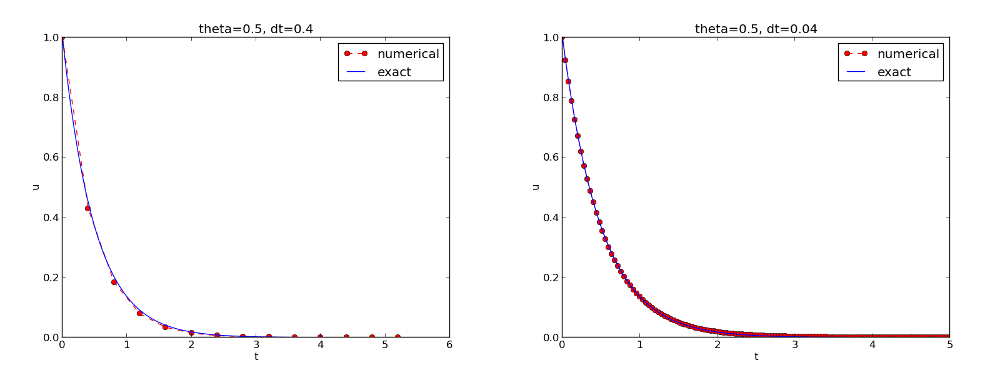

Implementation
All programs referred to in this section are found in the src/decay directory (we use the classical Unix term directory for what many others nowadays call folder).
Mathematical problem. We want to explore the Forward Euler scheme, the Backward Euler, and the Crank-Nicolson schemes applied to our model problem. From an implementational point of view, it is advantageous to implement the \( \theta \)-rule $$ u^{n+1} = \frac{1 - (1-\theta) a\Delta t}{1 + \theta a\Delta t}u^n, $$ since it can generate the three other schemes by various of choices of \( \theta \): \( \theta=0 \) for Forward Euler, \( \theta =1 \) for Backward Euler, and \( \theta =1/2 \) for Crank-Nicolson. Given \( a \), \( u^0=I \), \( T \), and \( \Delta t \), our task is to use the \( \theta \)-rule to compute \( u^1, u^2,\ldots,u^{N_t} \), where \( t_{N_t}=N_t\Delta t \), and \( N_t \) the closest integer to \( T/\Delta t \).
Computer Language: Python. Any programming language can be used to generate the \( u^{n+1} \) values from the formula above. However, in this document we shall mainly make use of Python of several reasons:
- Python has a very clean, readable syntax (often known as "executable pseudo-code").
- Python code is very similar to MATLAB code (and MATLAB has a particularly widespread use for scientific computing).
- Python is a full-fledged, very powerful programming language.
- Python is similar to, but much simpler to work with and results in more reliable code than C++.
- Python has a rich set of modules for scientific computing, and its popularity in scientific computing is rapidly growing.
- Python was made for being combined with compiled languages (C, C++, Fortran) to reuse existing numerical software and to reach high computational performance of new implementations.
- Python has extensive support for administrative task needed when doing large-scale computational investigations.
- Python has extensive support for graphics (visualization, user interfaces, web applications).
- FEniCS, a very powerful tool for solving PDEs by the finite element method, is most human-efficient to operate from Python.
Readers who feel the Python examples are too hard to follow will probably benefit from reading a tutorial, e.g.,
- The Official Python Tutorial
- Python Tutorial on tutorialspoint.com
- Interactive Python tutorial site
- A Beginner's Python Tutorial
Making a solver function
We choose to have an array u for storing the \( u^n \) values, \( n=0,1,\ldots,N_t \).
The algorithmic steps are
- initialize \( u^0 \)
- for \( t=t_n \), \( n=1,2,\ldots,N_t \): compute \( u_n \) using the \( \theta \)-rule formula
Function for computing the numerical solution
The following Python function takes the input data of the problem (\( I \), \( a \), \( T \), \( \Delta t \), \( \theta \)) as arguments and returns two arrays with the solution \( u^0,\ldots,u^{N_t} \) and the mesh points \( t_0,\ldots,t_{N_t} \), respectively:
from numpy import *
def solver(I, a, T, dt, theta):
"""Solve u'=-a*u, u(0)=I, for t in (0,T] with steps of dt."""
Nt = int(T/dt) # no of time intervals
T = Nt*dt # adjust T to fit time step dt
u = zeros(Nt+1) # array of u[n] values
t = linspace(0, T, Nt+1) # time mesh
u[0] = I # assign initial condition
for n in range(0, Nt): # n=0,1,...,Nt-1
u[n+1] = (1 - (1-theta)*a*dt)/(1 + theta*dt*a)*u[n]
return u, t
The numpy library contains a lot of functions for array computing. Most
of the function names are similar to what is found
in the alternative scientific computing language MATLAB. Here
we make use of
-
zeros(Nt+1)for creating an array of a sizeNt+1and initializing the elements to zero -
linspace(0, T, Nt+1)for creating an array withNt+1coordinates uniformly distributed between0andT
for loop deserves a comment, especially for newcomers to Python.
The construction range(0, Nt, s) generates all integers from 0 to Nt
in steps of s, but not including Nt. Omitting s means s=1.
For example, range(0, 6, 3)
gives 0 and 3, while range(0, Nt) generates 0, 1, ..., Nt-1.
Our loop implies the following assignments to u[n+1]: u[1], u[2], ...,
u[Nt], which is what we want since u has length Nt+1.
The first index in Python arrays or lists is always 0 and the
last is then len(u)-1. The length of an array u is obtained by
len(u) or u.size.
To compute with the solver function, we need to call it. Here
is a sample call:
u, t = solver(I=1, a=2, T=8, dt=0.8, theta=1)
Integer division
The shown implementation of the solver may face problems and
wrong results if T, a, dt, and theta are given as integers,
see Exercise 2: Experiment with integer division and Exercise 3: Experiment with wrong computations.
The problem is related to integer division in Python (as well as
in Fortran, C, C++, and many other computer languages): 1/2 becomes 0,
while 1.0/2, 1/2.0, or 1.0/2.0 all become 0.5. It is enough
that at least the nominator or the denominator is a real number
(i.e., a float object)
to ensure correct mathematical division. Inserting
a conversion dt = float(dt)
guarantees that dt is
float and avoids problems in Exercise 3: Experiment with wrong computations.
Another problem with computing \( N_t=T/\Delta t \) is that we should
round \( N_t \) to the nearest integer. With Nt = int(T/dt) the int
operation picks the largest integer smaller than T/dt. Correct
mathematical rounding as known from school is obtained by
Nt = int(round(T/dt))
The complete version of our improved, safer solver function then becomes
from numpy import *
def solver(I, a, T, dt, theta):
"""Solve u'=-a*u, u(0)=I, for t in (0,T] with steps of dt."""
dt = float(dt) # avoid integer division
Nt = int(round(T/dt)) # no of time intervals
T = Nt*dt # adjust T to fit time step dt
u = zeros(Nt+1) # array of u[n] values
t = linspace(0, T, Nt+1) # time mesh
u[0] = I # assign initial condition
for n in range(0, Nt): # n=0,1,...,Nt-1
u[n+1] = (1 - (1-theta)*a*dt)/(1 + theta*dt*a)*u[n]
return u, t
Doc strings
Right below the header line in the solver function there is a
Python string enclosed in triple double quotes """.
The purpose of this string object is to document what the function
does and what the arguments are. In this case the necessary
documentation do not span more than one line, but with triple double
quoted strings the text may span several lines:
def solver(I, a, T, dt, theta):
"""
Solve
u'(t) = -a*u(t),
with initial condition u(0)=I, for t in the time interval
(0,T]. The time interval is divided into time steps of
length dt.
theta=1 corresponds to the Backward Euler scheme, theta=0
to the Forward Euler scheme, and theta=0.5 to the Crank-
Nicolson method.
"""
...
Such documentation strings appearing right after the header of a function are called doc strings. There are tools that can automatically produce nicely formatted documentation by extracting the definition of functions and the contents of doc strings.
It is strongly recommended to equip any function whose purpose is not obvious with a doc string. Nevertheless, the forthcoming text deviates from this rule if the function is explained in the text.
Formatting of numbers
Having computed the discrete solution u, it is natural to look at
the numbers:
# Write out a table of t and u values:
for i in range(len(t)):
print t[i], u[i]
This compact print statement gives unfortunately quite ugly output
because the t and u values are not aligned in nicely formatted columns.
To fix this problem, we recommend to use the printf format, supported most
programming languages inherited from C. Another choice is
Python's recent format string syntax.
Writing t[i] and u[i] in two nicely formatted columns is done like
this with the printf format:
print 't=%6.3f u=%g' % (t[i], u[i])
The percentage signs signify "slots" in the text where the variables
listed at the end of the statement are inserted. For each "slot" one
must specify a format for how the variable is going to appear in the
string: s for pure text, d for an integer, g for a real number
written as compactly as possible, 9.3E for scientific notation with
three decimals in a field of width 9 characters (e.g., -1.351E-2),
or .2f for standard decimal notation with two decimals
formatted with minimum width. The printf syntax provides a quick way
of formatting tabular output of numbers with full control of the
layout.
The alternative format string syntax looks like
print 't={t:6.3f} u={u:g}'.format(t=t[i], u=u[i])
As seen, this format allows logical names in the "slots" where
t[i] and u[i] are to be inserted. The "slots" are surrounded
by curly braces, and the logical name is followed by a colon and
then the printf-like specification of how to format real numbers,
integers, or strings.
Running the program
The function and main program shown above must be placed in a file,
say with name decay_v1.py (v1 for 1st version of this program). Make sure you
write the code with a suitable text editor (Gedit, Emacs, Vim,
Notepad++, or similar). The program is run by executing the file this
way:
Terminal> python decay_v1.py
The text Terminal> just indicates a prompt in a
Unix/Linux or DOS terminal window. After this prompt, which will look
different in your terminal window, depending on the terminal application
and how it is set up, commands like python decay_v1.py can be issued.
These commands are interpreted by the operating system.
We strongly recommend to run Python programs within the IPython shell.
First start IPython by typing ipython in the terminal window.
Inside the IPython shell, our program decay_v1.py is run by the command
run decay_v1.py:
Terminal> ipython
In [1]: run decay_v1.py
t= 0.000 u=1
t= 0.800 u=0.384615
t= 1.600 u=0.147929
t= 2.400 u=0.0568958
t= 3.200 u=0.021883
t= 4.000 u=0.00841653
t= 4.800 u=0.00323713
t= 5.600 u=0.00124505
t= 6.400 u=0.000478865
t= 7.200 u=0.000184179
t= 8.000 u=7.0838e-05
In [2]:
The advantage of running programs in IPython are many: previous commands
are easily recalled with the up arrow, %pdb turns on debugging so that
variables can be examined if the program
aborts due to an exception, output of commands are stored in variables,
programs and statements can be profiled,
any operating system command can be executed, modules can be loaded
automatically and other customizations can be performed when starting
IPython -- to mention a few of the most
useful features.
Although running programs in IPython is strongly recommended, most
execution examples in the forthcoming text use the standard
Python shell with prompt >>> and run programs through
a typesetting like
Terminal> python programname
The reason is that such typesetting makes the text more compact in the vertical direction than showing sessions with IPython syntax.
Plotting the solution
Having the t and u arrays, the approximate solution u is visualized
by the intuitive command plot(t, u):
from matplotlib.pyplot import *
plot(t, u)
show()
It will be illustrative to also plot \( \uex(t) \) for comparison. We first need to make a function for computing the analytical solution \( \uex(t)=Ie^{-at} \) of the model problem:
def exact_solution(t, I, a):
return I*exp(-a*t)
It is tempting to just do
u_e = exact_solution(t, I, a)
plot(t, u, t, u_e)
However, this is not exactly what we want: the plot function draws
straight lines between the discrete points (t[n], u_e[n]) while
\( \uex(t) \) varies as an exponential function between the mesh points.
The technique for showing the "exact" variation of \( \uex(t) \) between
the mesh points is to introduce a very fine mesh for \( \uex(t) \):
t_e = linspace(0, T, 1001) # fine mesh
u_e = exact_solution(t_e, I, a)
We can also plot the curves with different colors and styles, e.g.,
plot(t_e, u_e, 'b-', # blue line for u_e
t, u, 'r--o') # red dashes w/circles
With more than one curve in the plot we need to associate each curve
with a legend. We also want appropriate names on the axis, a title,
and a file containing the plot as an image for inclusion in reports.
The Matplotlib package (matplotlib.pyplot) contains functions for
this purpose. The names of the functions are similar to the plotting
functions known from MATLAB. A complete function for creating
the comparison plot becomes
from matplotlib.pyplot import *
def plot_numerical_and_exact(theta, I, a, T, dt):
"""Compare the numerical and exact solution in a plot."""
u, t = solver(I=I, a=a, T=T, dt=dt, theta=theta)
t_e = linspace(0, T, 1001) # fine mesh for u_e
u_e = exact_solution(t_e, I, a)
plot(t, u, 'r--o', # red dashes w/circles
t_e, u_e, 'b-') # blue line for exact sol.
legend(['numerical', 'exact'])
xlabel('t')
ylabel('u')
title('theta=%g, dt=%g' % (theta, dt))
savefig('plot_%s_%g.png' % (theta, dt))
plot_numerical_and_exact(I=1, a=2, T=8, dt=0.8, theta=1)
show()
Note that savefig here creates a PNG file whose name reflects the
values of \( \theta \) and \( \Delta t \) so that we can easily distinguish
files from different runs with \( \theta \) and \( \Delta t \).
The complete code is found in the file decay_v2.py. The resulting plot is shown in Figure 6. As seen, there is quite some discrepancy between the exact and the numerical solution. Fortunately, the numerical solution approaches the exact one as \( \Delta t \) is reduced.
Figure 6: Comparison of numerical and exact solution.

Verifying the implementation
It is easy to make mistakes while deriving and implementing numerical algorithms, so we should never believe in the solution before it has been thoroughly verified. The most obvious idea to verify the computations is to compare the numerical solution with the exact solution, when that exists, but there will always be a discrepancy between these two solutions because of the numerical approximations. The challenging question is whether we have the mathematically correct discrepancy or if we have another, maybe small, discrepancy due to both an approximation error and an error in the implementation. When looking at Figure 6, it is impossible to judge whether the program is correct or not.
The purpose of verifying a program is to bring evidence for the property that there are no errors in the implementation. To avoid mixing unavoidable approximation errors and undesired implementation errors, we should try to make tests where we have some exact computation of the discrete solution or at least parts of it. Examples will show how this can be done.
Running a few algorithmic steps by hand
The simplest approach to produce a correct non-trivial reference solution for the discrete solution \( u \) of finite difference equations is to compute a few steps of the algorithm by hand. Then we can compare the hand calculations with numbers produced by the program.
A straightforward approach is to use a calculator and compute \( u^1 \), \( u^2 \), and \( u^3 \). With \( I=0.1 \), \( \theta=0.8 \), and \( \Delta t =0.8 \) we get $$ A\equiv \frac{1 - (1-\theta) a\Delta t}{1 + \theta a \Delta t} = 0.298245614035$$ $$ \begin{align*} u^1 &= AI=0.0298245614035,\\ u^2 &= Au^1= 0.00889504462912,\\ u^3 &=Au^2= 0.00265290804728 \end{align*} $$
Comparison of these manual calculations with the result of the
solver function is carried out in the function
def test_solver_three_steps():
"""Compare three steps with known manual computations."""
theta = 0.8; a = 2; I = 0.1; dt = 0.8
u_by_hand = array([I,
0.0298245614035,
0.00889504462912,
0.00265290804728])
Nt = 3 # number of time steps
u, t = solver(I=I, a=a, T=Nt*dt, dt=dt, theta=theta)
tol = 1E-15 # tolerance for comparing floats
diff = abs(u - u_by_hand).max()
success = diff <= tol
assert success
The test_solver_three_steps function follows widely used conventions
for unit testing. By following such conventions we can at a later
stage easily execute a big test suite for our software. The
conventions are three-fold:
- The test function starts with
test_and takes no arguments. - The test ends up in a boolean expression that is
Trueif the test passed andFalseif it failed. - The function runs
asserton the boolean expression, resulting in program abortion (due to anAssertionErrorexception) if the test failed.
test_solver_three_steps()
plot_numerical_and_exact(I=1, a=2, T=8, dt=0.8, theta=1)
show()
(Rather than calling test_*() functions explicitly, one will
normally ask a testing framework like nose
or pytest to find and run such functions.)
The complete program including the verification above is
found in the file decay_v3.py.
Computing the numerical error as a mesh function
Now that we have some evidence for a correct implementation, we are in a
position to compare the computed \( u^n \) values in the u array with
the exact \( u \) values at the mesh points, in order to study the error
in the numerical solution.
A natural way to compare the exact and discrete solutions is to calculate their difference as a mesh function: $$ \begin{equation} e^n = \uex(t_n) - u^n,\quad n=0,1,\ldots,N_t \tp \end{equation} $$ We may view \( \uex^n = \uex(t_n) \) as the representation of \( \uex(t) \) as a mesh function rather than a continuous function defined for all \( t\in [0,T] \) (\( \uex^n \) is often called the representative of \( \uex \) on the mesh). Then, \( e^n = \uex^n - u^n \) is clearly the difference of two mesh functions. This interpretation of \( e^n \) is natural when programming.
The error mesh function \( e^n \) can be computed by
u, t = solver(I, a, T, dt, theta) # Numerical sol.
u_e = exact_solution(t, I, a) # Representative of exact sol.
e = u_e - u
Note that the mesh functions u and u_e are represented by arrays
and associated with the points in the array t.
u_e = exact_solution(t, I, a)
e = u_e - u
are primary examples of array arithmetics: t is an
array of mesh points that we pass to exact_solution. This function
evaluates -a*t, which is a scalar times an array, meaning that
the scalar is multiplied with each array element.
The result is an array, let us call it tmp1. Then
exp(tmp1) means applying the exponential function to each element in
tmp, resulting an array, say tmp2. Finally, I*tmp2 is computed
(scalar times array) and u_e refers to this array returned from
exact_solution. The expression u_e - u is the difference between
two arrays, resulting in a new array referred to by e.
Computing the norm of the numerical error
Instead of working with the error \( e^n \) on the entire mesh, we often want one number expressing the size of the error. This is obtained by taking the norm of the error function.
Let us first define norms of a function \( f(t) \) defined for all \( t\in [0,T] \). Three common norms are $$ \begin{align} ||f||_{L^2} &= \left( \int_0^T f(t)^2 dt\right)^{1/2}, \tag{30}\\ ||f||_{L^1} &= \int_0^T |f(t)| dt, \tag{31}\\ ||f||_{L^\infty} &= \max_{t\in [0,T]}|f(t)|\tp \tag{32} \end{align} $$ The \( L^2 \) norm (30) ("L-two norm") has nice mathematical properties and is the most popular norm. It is a generalization of the well-known Eucledian norm of vectors to functions. The \( L^\infty \) is also called the max norm or the supremum norm. In fact, there is a whole family of norms, $$ \begin{equation} ||f||_{L^p} = \left(\int_0^T f(t)^pdt\right)^{1/p}, \end{equation} $$ with \( p \) real. In particular, \( p=1 \) corresponds to the \( L^1 \) norm above while \( p=\infty \) is the \( L^\infty \) norm.
Numerical computations involving mesh functions need corresponding norms. Given a set of function values, \( f^n \), and some associated mesh points, \( t_n \), a numerical integration rule can be used to calculate the \( L^2 \) and \( L^1 \) norms defined above. Imagining that the mesh function is extended to vary linearly between the mesh points, the Trapezoidal rule is in fact an exact integration rule. A possible modification of the \( L^2 \) norm for a mesh function \( f^n \) on a uniform mesh with spacing \( \Delta t \) is therefore the well-known Trapezoidal integration formula $$ ||f^n|| = \left(\Delta t\left(\half(f^0)^2 + \half(f^{N_t})^2 + \sum_{n=1}^{N_t-1} (f^n)^2\right)\right)^{1/2} $$ A common approximation of this expression, motivated by the convenience of having a simpler formula, is $$ ||f^n||_{\ell^2} = \left(\Delta t\sum_{n=0}^{N_t} (f^n)^2\right)^{1/2} \tp$$ This is called the discrete \( L^2 \) norm and denoted by \( \ell^2 \). The error in \( ||f||_{\ell^2}^2 \) compared with the Trapezoidal integration formula is \( \Delta t((f^0)^2 + (f^{N_t})^2)/2 \), which means perturbed weights at the end points of the mesh function, and the error goes to zero as \( \Delta t\rightarrow 0 \). As long as we are consistent and stick to one kind of integration rule for the norm of a mesh function, the details and accuracy of this rule is not of concern.
The three discrete norms for a mesh function \( f^n \), corresponding to the \( L^2 \), \( L^1 \), and \( L^\infty \) norms of \( f(t) \) defined above, are defined by $$ \begin{align} ||f^n||_{\ell^2} & \left( \Delta t\sum_{n=0}^{N_t} (f^n)^2\right)^{1/2}, \tag{33}\\ ||f^n||_{\ell^1} & \Delta t\sum_{n=0}^{N_t} |f^n| \tag{34}\\ ||f^n||_{\ell^\infty} & \max_{0\leq n\leq N_t}|f^n|\tp \tag{35} \end{align} $$
Note that the \( L^2 \), \( L^1 \), \( \ell^2 \), and \( \ell^1 \) norms depend on the length of the interval of interest (think of \( f=1 \), then the norms are proportional to \( \sqrt{T} \) or \( T \)). In some applications it is convenient to think of a mesh function as just a vector of function values and neglect the information of the mesh points. Then we can replace \( \Delta t \) by \( T/N_t \) and drop \( T \). Moreover, it is convenient to divide by the total length of the vector, \( N_t+1 \), instead of \( N_t \). This reasoning gives rise to the vector norms for a vector \( f=(f_0,\ldots,f_{N}) \): $$ \begin{align} ||f||_2 &= \left( \frac{1}{N+1}\sum_{n=0}^{N} (f_n)^2\right)^{1/2}, \tag{36}\\ ||f||_1 &= \frac{1}{N+1}\sum_{n=0}^{N} |f_n| \tag{37}\\ ||f||_{\ell^\infty} &= \max_{0\leq n\leq N}|f_n|\tp \tag{38} \end{align} $$ Here we have used the common vector component notation with subscripts (\( f_n \)) and \( N \) as length. We will mostly work with mesh functions and use the discrete \( \ell^2 \) norm (33) or the max norm \( \ell^\infty \) (35), but the corresponding vector norms (36)-(38) are also much used in numerical computations, so it is important to know the different norms and the relations between them.
A single number that expresses the size of the numerical error will be taken as \( ||e^n||_{\ell^2} \) and called \( E \): $$ \begin{equation} E = \sqrt{\Delta t\sum_{n=0}^{N_t} (e^n)^2} \tag{39} \end{equation} $$ The corresponding Python code, using array arithmetics, reads
E = sqrt(dt*sum(e**2))
The sum function comes from numpy and computes the sum of the elements
of an array. Also the sqrt function is from numpy and computes the
square root of each element in the array argument.
Scalar computing
Instead of doing array computing sqrt(dt*sum(e**2)) we can compute with
one element at a time:
m = len(u) # length of u array (alt: u.size)
u_e = zeros(m)
t = 0
for i in range(m):
u_e[i] = exact_solution(t, a, I)
t = t + dt
e = zeros(m)
for i in range(m):
e[i] = u_e[i] - u[i]
s = 0 # summation variable
for i in range(m):
s = s + e[i]**2
error = sqrt(dt*s)
Such element-wise computing, often called scalar computing, takes more code, is less readable, and runs much slower than what we can achieve with array computing.
Experiments with computing and plotting
Let us wrap up the computation of the error measure and all the
plotting statements for comparing the exact and numerical
solution in a new function explore. This function
can be called for various \( \theta \) and \( \Delta t \) values
to see how the error varies with the method and the mesh resolution:
def explore(I, a, T, dt, theta=0.5, makeplot=True):
"""
Run a case with the solver, compute error measure,
and plot the numerical and exact solutions (if makeplot=True).
"""
u, t = solver(I, a, T, dt, theta) # Numerical solution
u_e = exact_solution(t, I, a)
e = u_e - u
E = sqrt(dt*sum(e**2))
if makeplot:
figure() # create new plot
t_e = linspace(0, T, 1001) # fine mesh for u_e
u_e = exact_solution(t_e, I, a)
plot(t, u, 'r--o') # red dashes w/circles
plot(t_e, u_e, 'b-') # blue line for exact sol.
legend(['numerical', 'exact'])
xlabel('t')
ylabel('u')
title('theta=%g, dt=%g' % (theta, dt))
theta2name = {0: 'FE', 1: 'BE', 0.5: 'CN'}
savefig('%s_%g.png' % (theta2name[theta], dt))
savefig('%s_%g.pdf' % (theta2name[theta], dt))
show()
return E
The figure() call is key: without it, a new plot command will
draw the new pair of curves in the same plot window, while we want
the different pairs to appear in separate windows and files.
Calling figure() ensures this.
Filenames with the method name (FE, BE, or CN) rather than the \( \theta \) value embedded in the name, can easily be created with the aid of a little Python dictionary for mapping \( \theta \) to method acronyms:
theta2name = {0: 'FE', 1: 'BE', 0.5: 'CN'}
savefig('%s_%g.png' % (theta2name[theta], dt))
The explore function stores the plot in two different image file formats:
PNG and PDF. The PNG format is aimed
at being included in HTML files and the PDF format in LaTeX documents
(more precisely, in pdfLaTeX documents).
Frequently used viewers for these
image files on Unix systems are gv (comes with Ghostscript)
for the PDF format and
display (from the ImageMagick) suite for PNG files:
Terminal> gv BE_0.5.pdf
Terminal> display BE_0.5.png
A main program may run a loop over the three methods (\( \theta \) values)
and call explore to compute errors and make plots:
def main(I, a, T, dt_values, theta_values=(0, 0.5, 1)):
for theta in theta_values:
for dt in dt_values:
E = explore(I, a, T, dt, theta, makeplot=True)
print '%3.1f %6.2f: %12.3E' % (theta, dt, E)
The complete code containing the functions above resides in the file decay_plot_mpl.py. Running this program results in
Terminal> python decay_plot_mpl.py
0.0 0.40: 2.105E-01
0.0 0.04: 1.449E-02
0.5 0.40: 3.362E-02
0.5 0.04: 1.887E-04
1.0 0.40: 1.030E-01
1.0 0.04: 1.382E-02
We observe that reducing \( \Delta t \) by a factor of 10 increases the accuracy for all three methods (\( \theta \) values). We also see that the combination of \( \theta=0.5 \) and a small time step \( \Delta t =0.04 \) gives a much more accurate solution, and that \( \theta=0 \) and \( \theta=1 \) with \( \Delta t = 0.4 \) result in the least accurate solutions.
Figure 7 demonstrates that the numerical solution for \( \Delta t=0.4 \) clearly lies below the exact curve, but that the accuracy improves considerably by reducing the time step by a factor of 10.
Figure 7: The Forward Euler scheme for two values of the time step.

Combining plot files
Mounting two PNG files, as done in the figure, is easily done by the montage program from the ImageMagick suite:
Terminal> montage -background white -geometry 100% -tile 2x1 \
FE_0.4.png FE_0.04.png FE1.png
Terminal> convert -trim FE1.png FE1.png
The -geometry argument is used to specify the size of the image, and here
we preserve the individual sizes of the images. The -tile HxV option
specifies H images in the horizontal direction and V images in
the vertical direction. A series of image files to be combined are then listed,
with the name of the resulting combined image, here FE1.png at the end.
The convert -trim command removes surrounding white areas in the figure
(an operation usually known as cropping in image manipulation programs).
For LaTeX reports it is not recommended to use montage and PNG files
as the result has too low resolution. Instead, plots should be made
in the PDF format and combined using the pdftk, pdfnup, and pdfcrop tools
(on Linux/Unix):
Terminal> pdftk FE_0.4.png FE_0.04.png output tmp.pdf
Terminal> pdfnup --nup 2x1 --outfile tmp.pdf tmp.pdf
Terminal> pdfcrop tmp.pdf FE1.png # output in FE1.png
Here, pdftk combines images into a multi-page PDF file, pdfnup
combines the images in individual pages to a table of images (pages),
and pdfcrop removes white margins in the resulting combined image file.
The behavior of the two other schemes is shown in Figures 8 and 9. Crank-Nicolson is obviously the most accurate scheme from this visual point of view.
Figure 8: The Backward Euler scheme for two values of the time step.

Figure 9: The Crank-Nicolson scheme for two values of the time step.

Plotting with SciTools
The SciTools package provides a unified plotting interface, called Easyviz, to many different plotting packages, including Matplotlib, Gnuplot, Grace, MATLAB, VTK, OpenDX, and VisIt. The syntax is very similar to that of Matplotlib and MATLAB. In fact, the plotting commands shown above look the same in SciTool's Easyviz interface, apart from the import statement, which reads
from scitools.std import *
This statement performs a from numpy import * as well as an import
of the most common pieces of the Easyviz (scitools.easyviz) package,
along with some additional numerical functionality.
With Easyviz one can merge several plotting commands into a single one using keyword arguments:
plot(t, u, 'r--o', # red dashes w/circles
t_e, u_e, 'b-', # blue line for exact sol.
legend=['numerical', 'exact'],
xlabel='t',
ylabel='u',
title='theta=%g, dt=%g' % (theta, dt),
savefig='%s_%g.png' % (theta2name[theta], dt),
show=True)
The decay_plot_st.py file contains such a demo.
By default, Easyviz employs Matplotlib for plotting, but Gnuplot and Grace are viable alternatives:
Terminal> python decay_plot_st.py --SCITOOLS_easyviz_backend gnuplot
Terminal> python decay_plot_st.py --SCITOOLS_easyviz_backend grace
The backend used for creating plots (and numerous other options) can be permanently set in SciTool's configuration file.
All the Gnuplot windows are launched without any need to kill one before the next one pops up (as is the case with Matplotlib) and one can press the key 'q' anywhere in a plot window to kill it. Another advantage of Gnuplot is the automatic choice of sensible and distinguishable line types in black-and-white PDF and PostScript files.
Regarding functionality for annotating plots with title, labels on the axis, legends, etc., we refer to the documentation of Matplotlib and SciTools for more detailed information on the syntax. The hope is that the programming syntax explained so far suffices for understanding the code and learning more from a combination of the forthcoming examples and other resources such as books and web pages.
solver and explore functions
explained above as a starting point. Apply the new solver
to Exercise 17: Find time of murder from body temperature.
Memory-saving implementation
The computer memory requirements of our implementations so far
consists mainly of the u and t arrays, both of length \( N_t+1 \),
plus some other temporary arrays that Python needs for intermediate
results if we do array arithmetics in our program (e.g., I*exp(-a*t)
needs to store a*t before - can be applied to it and then exp).
Regardless of how we implement simple ODE problems, storage
requirements are very modest and put not restriction on how we choose
our data structures and algorithms. Nevertheless, when the methods
for ODEs used here are applied to three-dimensional partial
differential equation (PDE) problems, memory storage requirements
suddenly become a challenging issue.
The PDE counterpart to our model problem \( u'=-a \) is a diffusion equation \( u_t = a\nabla^2 u \) posed on a space-time domain. The discrete representation of this domain may in 3D be a spatial mesh of \( M^3 \) points and a time mesh of \( N_t \) points. A typical desired value for \( M \) is 100 in many applications, or even \( 1000 \). Storing all the computed \( u \) values, like we have done in the programs so far, demands storage of some arrays of size \( M^3N_t \), giving a factor of \( M^3 \) larger storage demands compared to our ODE programs. Each real number in the array for \( u \) requires 8 bytes (b) of storage. With \( M=100 \) and \( N_t=1000 \), there is a storage demand of \( (10^3)^3\cdot 1000\cdot 8 = 8 \) Gb for the solution array. Fortunately, we can usually get rid of the \( N_t \) factor, resulting in 8 Mb of storage. Below we explain how this is done, and the technique is almost always applied in implementations of PDE problems.
Let us critically evaluate how much we really need to store in the
computer's memory in our implementation of the \( \theta \) method. To
compute a new \( u^{n+1} \), all we need is \( u^n \). This implies that the
previous \( u^{n-1},u^{n-2},\dots,u^0 \) values do not need to be stored
in an array, although this is convenient for plotting and data
analysis in the program. Instead of the u array we can work with
two variables for real numbers, u and u_1, representing \( u^{n+1} \)
and \( u^n \) in the algorithm, respectively. At each time level, we
update u from u_1 and then set u_1 = u so that the computed
\( u^{n+1} \) value becomes the "previous" value \( u^n \) at the next time
level. The downside is that we cannot plot the solution after the
simulation is done since only the last two numbers are available. The
remedy is to store computed values in a file and use the file for
visualizing the solution later.
We have implemented this memory saving idea in the file decay_memsave.py, which is a slight modification of decay_plot_mpl.py program.
The following function demonstrates how we work with the two most recent values of the unknown:
def solver_memsave(I, a, T, dt, theta, filename='sol.dat'):
"""
Solve u'=-a*u, u(0)=I, for t in (0,T] with steps of dt.
Minimum use of memory. The solution is stored in a file
(with name filename) for later plotting.
"""
dt = float(dt) # avoid integer division
Nt = int(round(T/dt)) # no of intervals
outfile = open(filename, 'w')
# u: time level n+1, u_1: time level n
t = 0
u_1 = I
outfile.write('%.16E %.16E\n' % (t, u_1))
for n in range(1, Nt+1):
u = (1 - (1-theta)*a*dt)/(1 + theta*dt*a)*u_1
u_1 = u
t += dt
outfile.write('%.16E %.16E\n' % (t, u))
outfile.close()
return u, t
This code snippet serves as a quick introduction to file writing in Python.
Reading the data in the file into arrays t and u are done by the
function
def read_file(filename='sol.dat'):
infile = open(filename, 'r')
u = []; t = []
for line in infile:
words = line.split()
if len(words) != 2:
print 'Found more than two numbers on a line!', words
sys.exit(1) # abort
t.append(float(words[0]))
u.append(float(words[1]))
return np.array(t), np.array(u)
This type of file with numbers in rows and columns is very common, and
numpy has a function loadtxt which loads such tabular data into a
two-dimensional array, say with name data. The number in row i and
column j is then data[i,j]. The whole column number j can be
extracted by data[:,j]. A version of read_file using np.loadtxt
reads
def read_file_numpy(filename='sol.dat'):
data = np.loadtxt(filename)
t = data[:,0]
u = data[:,1]
return t, u
The present counterpart to the explore function from
decay_plot_mpl.py must run
solver_memsave and then load data from file before we can compute
the error measure and make the plot:
def explore(I, a, T, dt, theta=0.5, makeplot=True):
filename = 'u.dat'
u, t = solver_memsave(I, a, T, dt, theta, filename)
t, u = read_file(filename)
u_e = exact_solution(t, I, a)
e = u_e - u
E = sqrt(dt*np.sum(e**2))
if makeplot:
figure()
...
Apart from the internal implementation, where \( u^n \) values are
stored in a file rather than in an array, decay_memsave.py
file works exactly as the decay_plot_mpl.py file.